Vanguard Learn: AI Academic Advising and Skill Tracking.
A mobile app concept that shows students where they stand, what to work on next, and how they compare with their major's benchmark.

This is a concept designed with sample data. It has not been built or tested with users. All figures shown in the screens are sample data.
Students can't tell if they're on track, or what to do next
Students piece together their standing from transcripts, degree audits, online courses and advisor meetings. Generic AI tools know nothing about their actual courses. Five gaps stood out:
- No single view of academic records, course progress and skills
- No benchmark to compare against a target major or role
- Generic advice that ignores a student's measured strengths
- Scores that don't say which skill to work on next
- No habit feedback (streaks, targets), so effort stalls
The question the app answers: "Am I ready for what I'm aiming at, and what should I do next?"
Project goals
- Give students one dashboard for GPA, credits and subject mastery
- Turn a readiness score into named next actions
- Tutor through questions instead of handing out answers
- Build study consistency with streaks and weekly targets
- Compare a student's skills with their major's expectations
- Lay the groundwork for career and role recommendations later
Four user groups and an audit of a reference app
I analysed four user groups and audited an existing academic-progress and AI-tutoring app screen by screen.
Interviews, surveys or usability tests. The findings below are patterns from the audit, not tested results.
Wants evidence-based direction, not generic advice.
Wants to benchmark skills and close specific gaps before placements.
Needs a guided, self-paced path with limited time.
Needs one view of many students to decide who needs help.
From audit findings to wireframes
Each audit observation became a design decision. I then sketched six wireframes covering the two core flows, career and skill recommendation and skill tracking, to test the structure before styling anything.
| What the audit showed | What I designed |
|---|---|
| One composite score reads more clearly than scattered metrics | The home screen leads with GPA, degree roadmap index and one readiness score |
| A percentage alone doesn't say what to do | Status chips (Mastered, In Progress, High Growth) and named next steps |
| A benchmark makes a gap obvious | A five-axis radar of current level against the major benchmark |
| Habit mechanics sustain effort | Streaks, a weekly study target and a daily cadence grid |
| Help works best when tied to a current goal | A tutor scoped to one course and exam |
| Each role expects a different journey | Role selection on the first screen |
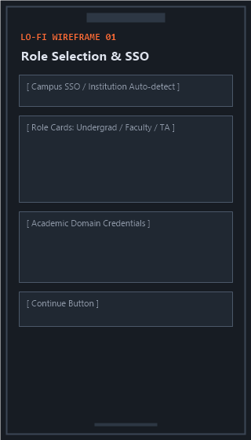
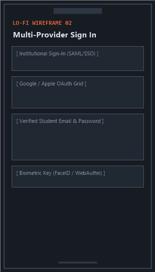
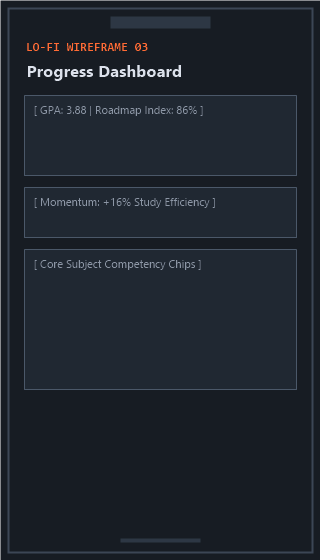
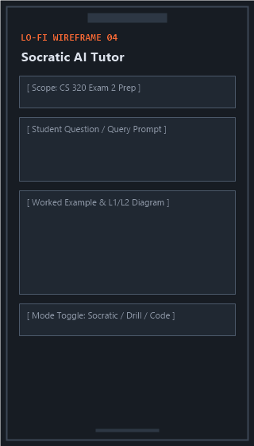
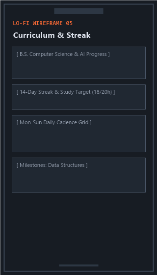
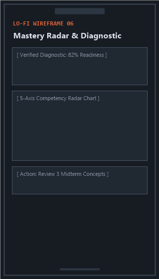
Six low-fidelity wireframes for the recommendation and skill-tracking flows.
From wireframe to final screen


The six screens
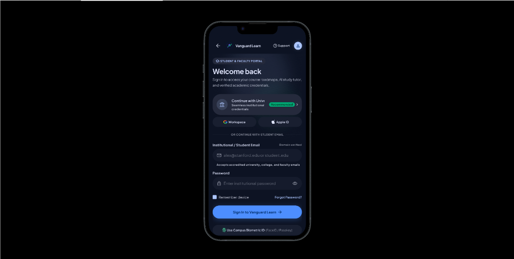
Create account
Role selection (Undergrad, Researcher, Faculty/TA) comes first so the app can tailor everything after it. Campus SSO is the main path, with email as a fallback. The institution is auto-detected to cut typing.
Sign in
Options run from the recommended university login, to Google and Apple, to email and password, to biometrics. This covers institutions with different IT setups, and only accredited institutional emails are accepted.
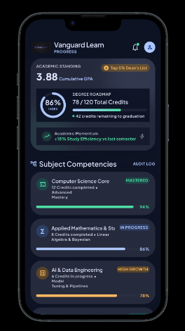
Progress (home)
GPA, a Dean's List badge and a degree-roadmap ring sit above subject bars with status chips. The summary comes first and detail follows on scroll. An "Audit Log" link shows how scores are calculated, to build trust.
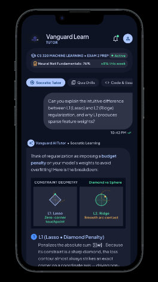
AI tutor
Scoped to one course and exam (CS 320 Machine Learning, Exam 2 prep), with Socratic, Quiz Drills and Code & Essay modes. A worked example pairs a diagram of L1 and L2 constraints with a numbered explanation, so the answer is not plain text.
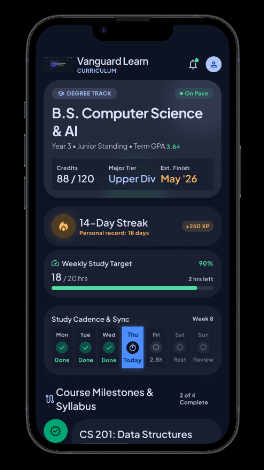
Curriculum
A degree-track summary, a 14-day streak, a weekly target (18 of 20 hours) and a Monday-to-Sunday cadence grid. Long-term degree status and short-term course milestones share one screen.
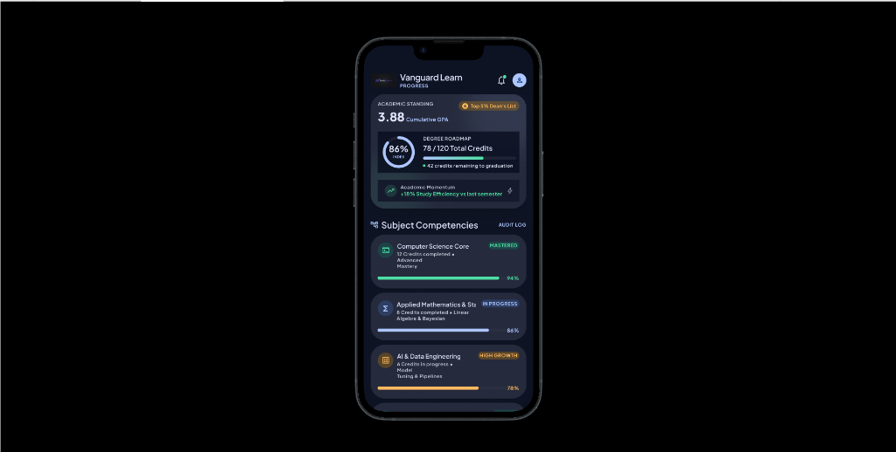
Mastery
A verified diagnostic (82% readiness) with a specific note ("3 critical concepts to review before midterms") above the five-axis radar against the major benchmark. The score always comes with a next step.
Note: All figures are sample data.
Business and feasibility (proposed)
I wrote a strategy document alongside the design to test whether the product could work in practice.
Campus licensing for universities first, then premium student subscriptions, then verified placement services once enough verified data exists. Each stage makes the next one easier.
Prestige institutions first, then mid-tier universities, then international and community colleges.
Weekly-target completion, 7/14/30-day streak retention, weekly readiness change, whether momentum predicts end-of-semester GPA, licence renewals, and free-to-premium conversion.
A cross-platform mobile app, REST/GraphQL API, SAML/OAuth2 login, a retrieval-based tutor over course material, and encrypted storage with FERPA-aligned handling.
Main risks: AI accuracy, dependence on university login systems, streak pressure on some students, biased scoring, and data privacy.
What's not done, and what I'd test next
Not done: Usability testing, real data, and career-role mapping (future scope, which is why the title says academic advising).
Next test: Five students, three tasks: find what to study before the midterm, explain what the radar shows, and set a weekly target. Watch where they hesitate.